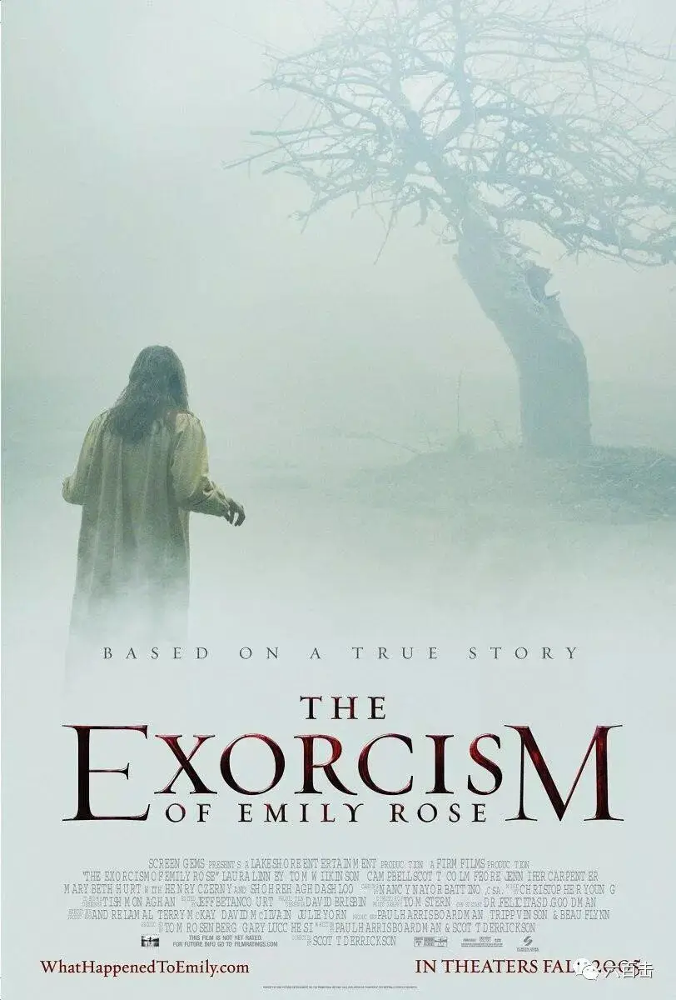
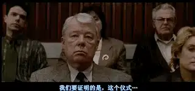
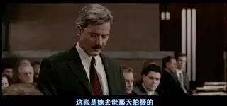
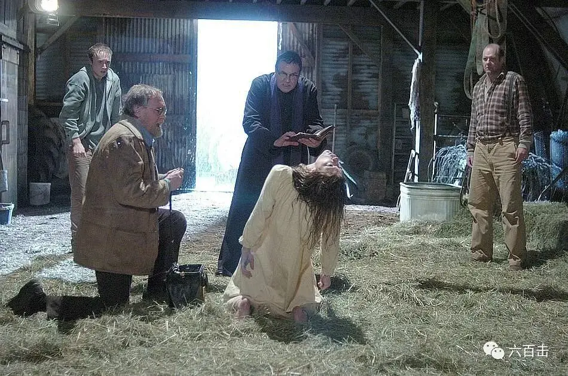
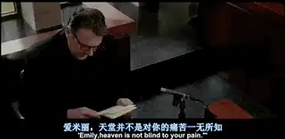
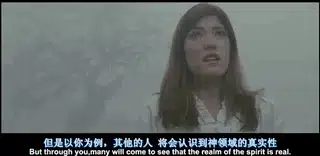
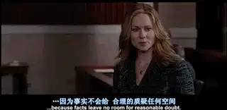
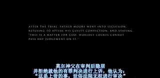

神父为一个叫做艾米丽的女大学生进行驱魔，但是没有成功，女孩惨死。
于是神父被公诉，罪状是神父采用不正确的方式治疗女孩，而延误了女孩就医治疗的机会。
这是发生在上世纪70年代一个德国家庭的真人真事。
这件事情引起社会广泛关注，因为在“科学解释一切”和“理性至上”的现代社会中，现代人只关心和承认经过理性检验的事，很多人都难以接受超自然现象的存在。
基于这样的认识，很多人无法接受完备的《圣经》，圣经中耶稣变水为酒、行在水上、医病赶鬼等神迹在很多人眼中是无稽之谈。
甚至美国总统杰斐逊有一本自己编排过的《圣经》，他将《圣经》中所有的神迹和超自然记载都除去，将《圣经》变成一套哲理或者伦理道德。
所以“驱魔”引起了人们极大的好奇心，而“驱魔失败”更是让无数吃瓜群众等着看教会的笑话。
今天要介绍的电影《驱魔》就是根据这件真人真事改编而来，电影通过扣人心弦的法庭戏逐步交代了事情发生的过程，也借着辩护深刻挖掘了这件事背后所反映出来的信仰危机。

电影直接开始于涉事的莫尔神父被抓。
由于这件案件引起了巨大的轰动，官方希望低调处理，教会方面也不想因为这件事影响形象，希望涉事的莫尔神父在法庭上不要为自己辩护，以免被别人抓住更多诟病的地方。
案件还没有开审，大家基本上已经达成了判决的意向，基本认定莫尔神父有罪。
剩下的就是想办法劝莫尔神父按照大家的意思保持沉默，等待法院判决。
这个任务交给了能言善辩、言辞犀利的艾琳，她的领导告诉艾琳，如果这件事情办成了，那么她将会成为律师事务所资深合伙人。
这对于出生单身家庭、一路艰辛打拼的艾琳非常有吸引力，所以艾琳很快便接下了这个案子，答应做莫尔神父的辩护律师。
- 01- 艾琳与莫尔神父
艾琳来到监狱，请求莫尔神父接受她为辩护律师，可是神父希望自己的辩护律师是一个天主教徒，而艾琳是一名不可知论者。
莫尔神父拒绝艾琳作为自己的辩护律师，可是艾琳再三请求，莫尔神父很好奇艾琳为何要坚持接这件受到广泛关注而又很棘手的案件。
艾琳如实告诉神父自己其中的如意算盘，这样的坦率反而获得了神父的信任，神父答应艾琳做自己的辩护律师，但同时有一个条件：那就是神父可以获得自我辩护的机会。
经过简单沟通，艾琳发现这位神父根本不在乎自己身陷囹圄和被定罪，他最希望的就是将艾米丽的真相告诉大家。
- 02 - 悲惨的艾米丽
法庭上，作为控方代表的律师是一个每周都去礼拜的基督徒，但是从心底里他不相信任何非理性的事情。
所以这件案件在他眼中基本上没有悬念，神父难逃判罪。
他的控诉非常有力且极富感染力。

他将艾米丽驱魔前后的照片拿出来给现场的法官和陪审团看。

控方律师认为是神父劝说艾米丽放弃医学治疗而酿成惨剧。
对于控方律师强有力的控诉，艾琳直接放弃了开庭辩护，告诉法官会在抗辩时再做辩护，她安慰神父，这只是计划中的一步。
紧接着，其他证人进行了相关陈述。
艾米丽的保姆告诉法官，艾米丽出生在一个虔诚的天主教家庭，从小到大是一个性格开朗、非常阳光的女孩，直到上了大学忽然发生了变化。
有一天，她接到艾米丽的电话，电话中艾米丽泣不成声，慢慢平复后，艾米丽才告诉她发生的事情。
一天晚上，艾米丽独自一人在宿舍中，睡梦中忽然闻到有东西烧焦了的味道，她起身发现并没有什么东西烧着。
回到床上后，她忽然感觉有东西重重地压在自己的身上，甚至无法呼吸，她看到桌子自动移动。
这一切都吓坏了艾米丽。
接着艾米丽的医生米勒告诉大家，事情发生后，艾米丽被送到医护室，经过米勒诊断，艾米丽可能是癫痫病。
于是，米勒给她开了甘比超来服用治疗，但是后来艾米丽没有来进行复诊，也停止继续服用甘比超，艾米丽告诉米勒，她确信自己的问题是精神方面的问题，而莫尔神父能够帮助自己度过难关。
所以，米勒认为是莫尔神父的介入害死了艾米丽。
艾琳辩护到，米勒只是认为艾米丽可能是癫痫，并不一定百分之百确信，而看到桌子移动，感觉有东西重压这些都不是癫痫的典型症状。
开庭结束后，艾琳从艾米丽的男友那里了解了更多非同寻常的事情，艾米丽在平常的生活中能看到很多可怖的景象。
而艾米丽的男友也亲眼目睹了艾米丽身体非正常的扭曲，后来艾米丽开始绝食、自残，医治无效后，家人将希望完全放在了莫尔神父身上。
当天，神父告诉艾琳，这件案件背后笼罩着黑暗的权势，你需要小心自己走的每一步。
- 02 - 癫痫和精神错乱
再次开庭后，验尸的医生表明艾米丽的死因是来自于很多的外伤和长期性的营养不良。
他认为，艾米丽不仅仅是癫痫，而且因为癫痫诱发了精神分裂，所以在听觉、视觉上产生了幻觉，有时候便显出强烈的妄想症，癫痫的发作会锁住关节、扭曲身体。
而继续服用甘比超可以减缓这些病症，挽救艾米丽的性命，这些信息都在指向莫尔神父的过失。
艾琳反问证人，为什么之前艾米丽服用了一段时间甘比超，还会出现“精神错乱”的现象，你能确定继续服用就一定可以缓解。
医生说，这是一个他相信的假设，他并不能确信。
而精神性癫痫也是这位医生根据艾米丽的症状定义的新名词，并不是一个经过长期检验的病症。
似乎，艾米丽还不能完全被癫痫和精神错乱盖棺定论。
面对不利的局面，艾琳需要一个医学专家来证明艾米丽并非癫痫或者精神错乱，她翻阅了相关症状的书籍，找到一位从科学的角度去解释驱魔和精神错乱的专家。
她在一所大学中担任人类学和精神学教授，专门研究不同文化中人们的精神活动以及精神活动过程中引起的患者生理和心理上的变化。
这位教授认为“着魔”是一件正常的事情，经过她对本案的研究，认为艾米丽是一个非常敏感的人，因此也更容易感知到超自然的存在甚至更容易被魔鬼攻击。
而驱魔失败正是因为服用药物的原因，因为甘比超是一种麻醉物，所以大脑受到麻醉导致艾米丽对驱魔仪式失去了感知。
当然，“服用甘比超会减缓驱魔仪式的功效”也是一种未经证明的假设，教授的观点只是多了条思路，并不能帮助莫尔神父摆脱控告。
-03- 证明恶魔存在
目前，所有的证据都对控方有利，正当艾琳一筹莫展的时候，忽然事件发生了转机，一位精神科的医生愿意为莫尔神父作证。
原来他也在驱魔仪式的现场，是一个目击者，他是莫尔神父的朋友，驱魔前，莫尔神父请他来帮忙，现场监控艾米丽的生命体征。
他告诉艾琳，当坏东西不在艾米丽的体内时，艾米丽是完全清醒的，她知道自己是被魔鬼控制了，这显然不是精神病，因为疯子并不知道自己发疯。
医生还告诉艾琳，莫尔神父并没有排斥医学治疗，神父也请求他为艾米丽进行医学治疗，他也试图阻止艾米丽自残并强迫她吃东西，但是都没有用，他告诉莫尔神父：作为一个医生，我无能为力。
这位医生的支持给了艾琳很大的信心，但是艾琳很纳闷为什么神父不提前告诉她医生的存在，这可是能够帮助他洗脱罪名的有利证据啊。
而莫尔神父的回答深深的感动了艾琳，因为医生曾让莫尔保密，所以神父宁愿坐牢也信守对朋友的承诺。
但是医生最终没能站到庭审现场为莫尔神父辩护，他出车祸去世了。
现在唯一的希望就是医生交给艾琳的一盘磁带，它记录了驱魔现场的整个过程。
录音表明驱魔现场有莫尔神父、医生、艾米丽的父亲和男友，录音中艾米丽突然同时发出双重声音，还会发出很多可怕的叫声以及希伯来语、希腊语以及其它听不懂的话语。

即使有这样的证据，控方还是搬出了艾米丽曾经的课程表，表明艾米丽曾经学过希伯来语、希腊语，这些都能够解释录音带中各种语言的由来。
而双重声音也并不能证明魔鬼的存在，精神错乱下或者经过特殊训练，双重声音是有可能发出来的。
这真是“你有一百个理由证明它存在，对方照样能找出一万个理由证明它不存在。”
-04- 艾米丽的真相
随着艾琳对案件的逐步深入，他对眼前这位莫尔神父的钦佩愈来愈多，他可以为了信守承诺而承受不白之冤，当医生对艾米丽说无能为力的时候，神父对艾米丽呵护备加，凭着勇气和爱心陪伴艾米丽走到了最后。
艾琳放弃了对上级的承诺，她决定要给莫尔神父辩护的机会。
庭审现场，艾琳向神父提问：艾米丽作为一个虔诚的天主教徒，上帝为什么会允许艾米丽被恶魔附身，甚至如此悲惨的死去？
神父终于等到了这个机会，莫尔并不在乎自己会不会判刑，他只想让大家了解艾米丽的故事，莫尔告诉艾琳，这个问题艾米丽可以回答。
神父拿出艾米丽留给他的信，当驱魔失败后，沉睡中的艾米丽忽然听到有声音在向她说话。
她起身跟随那个声音，来到一片迷雾中，这时她听到上帝的言语，上帝告诉她，天堂并不是对你的痛苦一无所知。

只是上帝将给了你一个任务，在这个宣称上帝已死的时代用你来证明魔鬼是存在的。
如果魔鬼是真实的，那么上帝也是真实的。
你可以现在选择死去并安息在主怀里，也可以选择继续忍受魔鬼的折磨，去更多地向世人展示灵界的存在。

而艾米丽最终选择了继续忍受痛苦。
这封信让在场的每个人动容，但是信里的内容注定没有办法证实。
- 04- 这场审判实质上是对可能性的审判
面对依旧无动于衷的控方，艾琳激动地做了最后的辩护：
我们能证明上帝存在么？我们能证明上帝不存在么？
上帝和魔鬼有存在的可能性么？
我们能掌握事实吗？
或者是法律所能做的仅仅是在各种可能性的猜测中进行判断？
而医生们、医学专家们、控方律师，他们都以科学之名，试图将所谓的事实占为己有。
他们拒绝承认自己的局限性，并拒绝一切非理性的存在。
而在他们所努力建构的知识王国中，展示出来的却是信仰的塌陷与人情的冷漠，那是一个令一切良知都会为之心酸的世界。

最终莫尔神父还是被判有罪，但是陪审团给出的意见是，莫尔神父已被拘留的日子作为他的刑期，莫尔神父虽被判有罪，却获得了自由。
其实从一开始，这件案子就注定是无解，法律程序是一套极其理性的判断过程，而驱魔就像上帝一样是超越理性的。
既然这样，理性又如何来判定超越理性之上的存在呢？

启蒙时代后人类的世界观发生着巨大的改变，理性主义，唯物主义和自然主义的增加逐渐熄灭了人类对超自然和上帝领域的兴趣。
理性、科学本是好事，但是他们有其应用的特定领域，当人类在骄傲地高举理性至上时，熟不知，在现代化的今天，科学至上主义就成为了新的“宗教“，一种我们自我感觉高大上的”宗教“。
这都足以熄灭我们的思考，将世界非常自我的缩小为只是自己可以理解、可以证明的世界，我们已经很难从技术动力之外来理解技术的思想问题，这也是现代人控制欲强烈、普遍焦虑的思想根源。
本片借着如此极端的例子批判了我们这种狂妄的理性，正如纪克之所言：
科学给我们带来了战胜无知的巨大胜利，但是如果作进一步的考察的话，这一胜利也可被看作是最大无知的奥威尔式的胜利：我们所获得的只是新的因循守旧，它固然使我们谈论任何以工具理性的功能语言说出的话，但他阻碍我们朝前......'永活的真理'......因此，我们虽然可以讨论生活的构造及其客观的草种，却不能谈及神、恩典或道德。
面对现代化危机，我们的确需要驱除“唯科学主义”和“理性至上”的“魔”，需要重新思考我们的理性，并将它放在合适的位置。
关注并回复：驱魔
获取电影资源
相关推荐：
一个唯科学主义者的悲剧
击垮纳粹独裁的六份传单
《乡愁》 | 没有一个人能够将信仰拍的如此诗意和凝重
100双绝望的眼睛
奥斯卡影帝，你把自己演死了
这里没有挑逗你眼目情欲的小鲜肉
也没有挑动你肉体情欲的段子
更没有膨胀你今生骄傲的鸡血
我们只在乎那些最质朴真诚的作品
在那里我们才能恢复真正的想象力
我们也坚信这才是我们真正需要的

ID:Six_hundred_hits
长按二维码，一键关注
【六百击】
-END-
电影评论
尽情分享朋友圈

苹果打赏
通道
小提示：文末广告是腾讯配送广告，内容与本号无关，但您的每次点击（无需反复点）都会给平台带来几毛收益，欢迎您点击支持六百击。